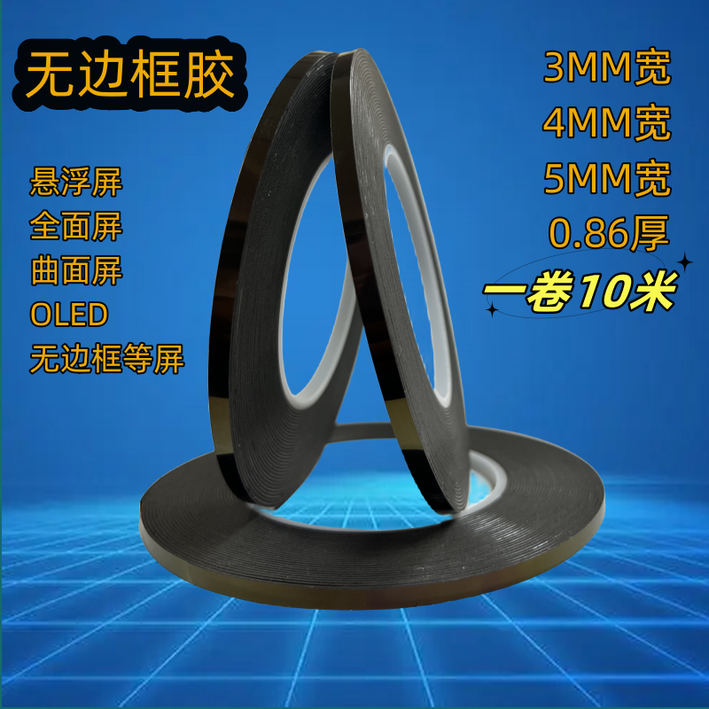
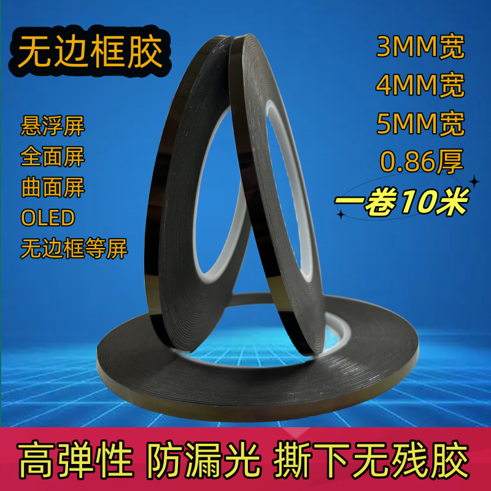
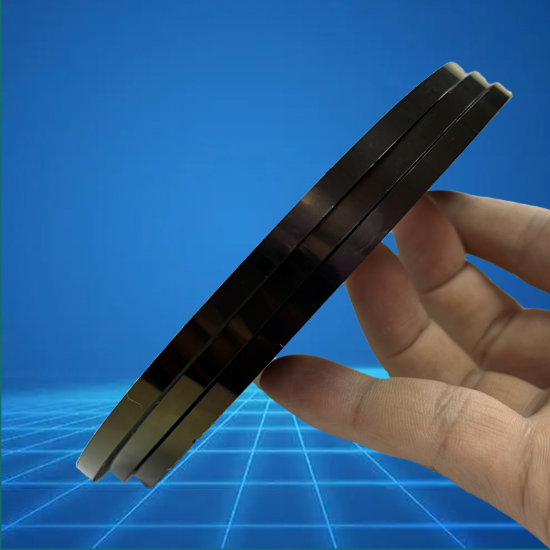
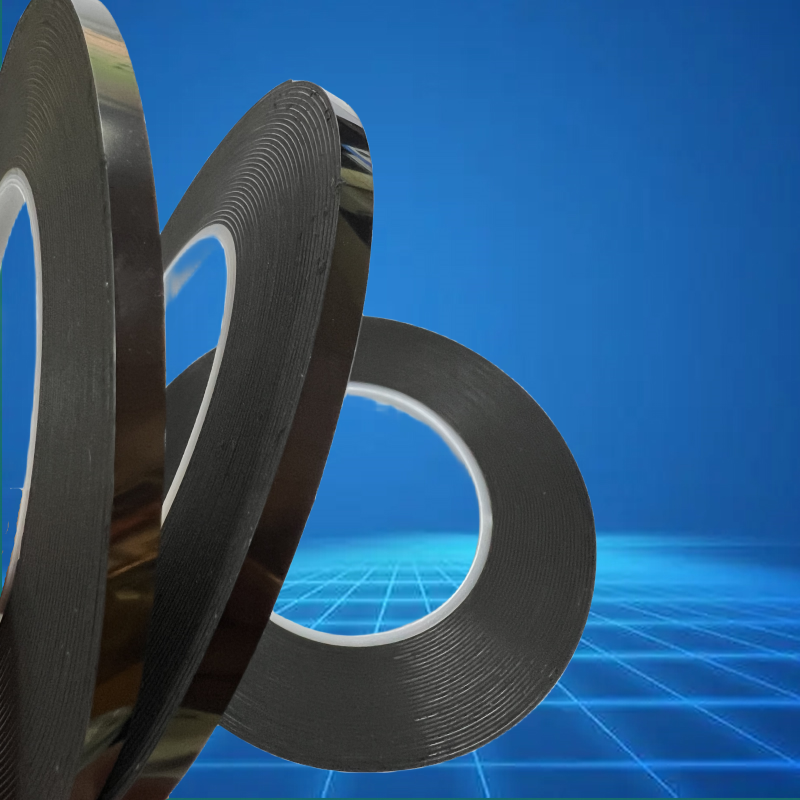
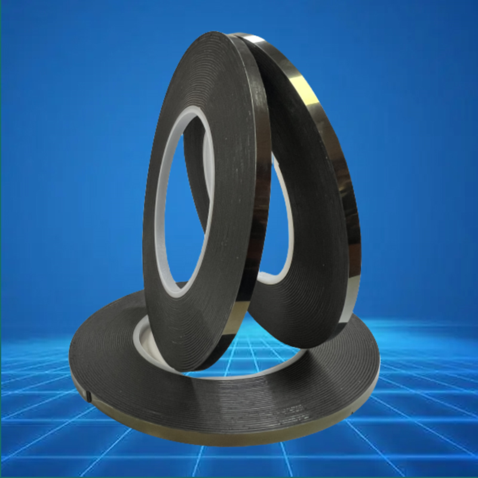
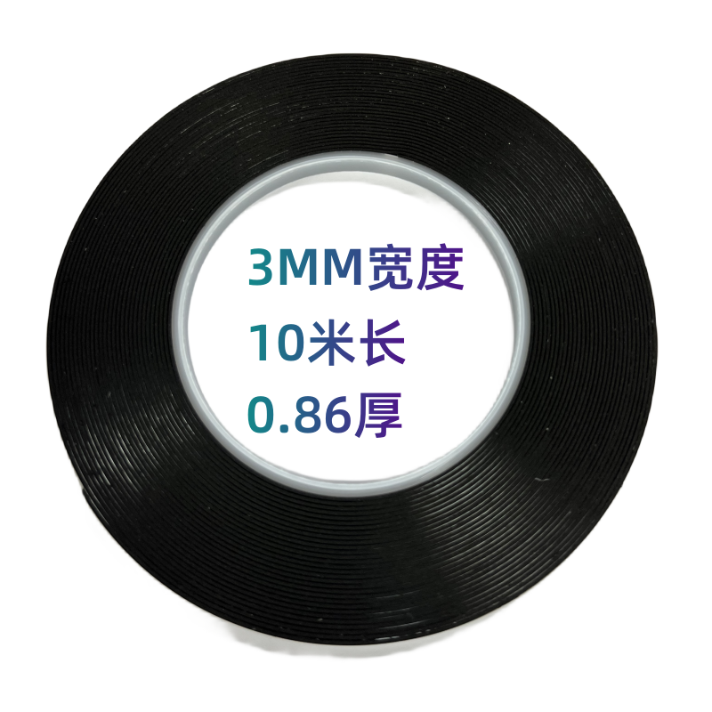

This auctionis for 1 roll 10meters/roll, 3mm~5mm Tape Adhesive LCD Screen Frameless Double Sided Sticky Tape For TV Borderless Curved Display Sealing Fix
-Width:3mm/4mm/5mm/6mm choose (other wide, please contact)
-Length:10 meters
-Thickness: 0.86mm
-Condition: Brand New
-Long time Temp. Resist: around 80 degree
-Material: PU+PET+Acrylic Acid Glue
Feature
-Strong Bonding
-Easy Die-cutting
-Easy to be reworkable
-Easy remove of double side, no residue
-Good rebond and compression easticity
-Full direction light mask
-Dustproof and shock proof
Recommend Application
-Bonding and rework of screen with frame, especially for many kinds of frame/framess curved, borderless, full screen, floating screen, monitor
-Sealing
-Ideal material for irregular surface protection
-Absorbing against impact and vibration
-Fill gaps
Warm Tips:
-3mm wide tape recommend for the size around 32"~43"
-4mm wide tape recommend for the size around 49"~65"
-5mm wide tape recommend for the size around 58"~65"~75"
-24”~34” curved screen recommend using 4mm wide
-Please clean the surface before use （please don't use foam cleanser)
Important notes:
-Before use:For maximum bond strength, the surface must be clean, dry, smooth, have no rust and oil pollution.
-About sticky:this tape is with strong adhesion, it is designed to bond materials other than skin. The adhesives used are designed to give optimum performance and adhesion to aluminum and plastics.
-About High rebound: this tape is high rebound, so it is very soft. If you are first time to fix TV Borderless Curved Display, you may find it difficult to tear the transparent film, then you can use toothpick, nail or other tools to peel off. You can also contact local Professional maintenance personnel.
-After installed: please flat the screen for more than 24 hours.
Fill gaps





